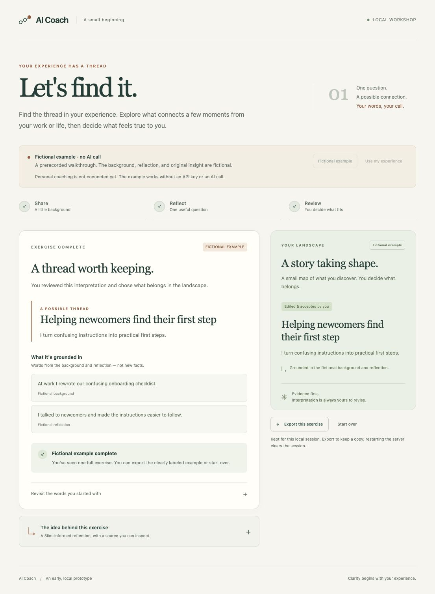
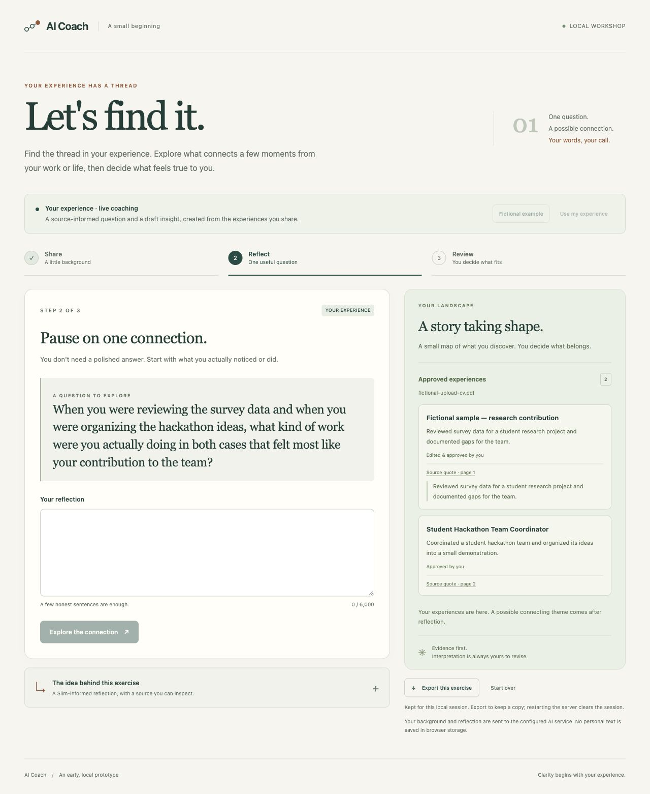
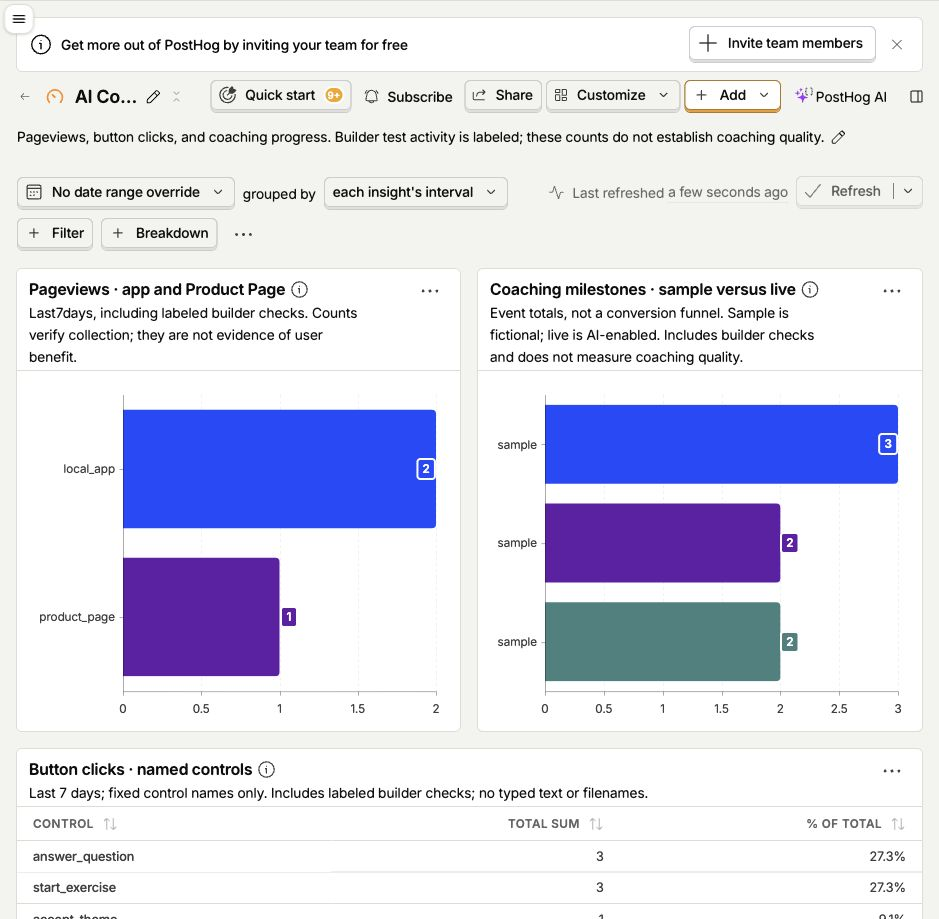

An AI personal branding coach that helps professionals connect their experiences, strengths, and ambitions into a clear story about who they are and the value they bring.
Current Status: Build 2 in progress. Build 1 was submitted November 8; PRD v2 below records the current scope and next comparison. Done A local prototype runs one short coaching exercise using either a clearly labeled fictional example or live AI responses through OpenRouter. Users can also import one résumé/CV PDF and review experience cards before adding them to the landscape.
Demo: The app runs on the builder's laptop. The screenshots below show a reviewed example theme and a live question based on approved experiences from a fictional CV.
The fictional example's background, question, answer, and original suggestion are prepared text; that mode makes no AI calls. Live mode sends the current exercise to the configured AI service and checks the response before displaying it. The exercise adapts Pamela Slim's approach to finding themes across experiences, described in Dorie Clark's article; the full book has not been reviewed.


Checked November 4: 70 automated checks passed. Browser testing confirmed live extraction from a fictional two-page CV, editing and approving two of three cards, export containing only those approved cards, and a question based on them. The first question response failed validation and worked on one retry. Earlier testing with the builder's own pasted background reached question and theme review. These checks do not establish coaching quality or reliable extraction across varied real CVs.
Checked November 11: PostHog received pageviews and button clicks from this Product Page and the local app, plus progress events from the fictional coaching exercise. Masked session replays were viewed for both surfaces. All 73 Python and 10 JavaScript checks passed. These are builder checks, not evidence of outside-user adoption or coaching quality.
Next: Planned Try a real CV and compare the exercise with competent ordinary prompting. Work from Pamela Slim's Body of Work is reserved for a second build day; the book has not yet been obtained or reviewed for this project. A deeper workshop and the expert roundtable remain planned.
Who is this for? The first user is me, Jason Daniels, the builder. I'm a professional who wants to communicate how I see the world, how that perspective shows up in my work, and where I want to go. My relevant material already exists across a LinkedIn profile, a résumé, notes, and prior writing, but together it doesn't tell a connected story or make my value clear.
The painful "Before" workflow: I review scattered materials and try to piece together a professional narrative. I often start from a blank page or end up describing my career as a list of job titles.
The "After" workflow with this product: A guided conversation produces a working personal brand landscape. It's a narrative that connects my worldview, experiences, current value, and aspirations, with supporting experiences I can later adapt to a specific setting.
Biggest risk: The app may offer no more useful insight than competent ordinary LLM prompting. Its intended value is helping users apply ideas from selected experts to their own experiences through guided questions, reflection, and feedback—the kind of value someone seeks from a book, seminar, or consultant. A polished interface or a recognizable expert name would not establish that value.
How this build tests the risk: The current exercise asks about a connection between experiences, proposes one tentative theme, and shows the user's supporting words beside it. The user can correct or reject the result. That makes a small, concrete outcome available to compare: did the exercise reveal a useful connection, and does the person recognize it as their own? Matching quotations checks the evidence trail; it does not prove that the interpretation is accurate or helpful.
Small comparison pilot: Planned Recruit two or three reachable people with this problem. Compare the app with (A) a competent ordinary coaching prompt and (B) a chat given the same prompt plus the same reviewed source card. Use the same model, task, approved background, and reflection answers for the output comparison. Show the results without tool labels and vary their order. Ask each person to identify a specific useful insight, point out inaccurate or generic claims, and choose which result they would use—or say that none helps.
Effort and interpretation: Separately record the time and corrections needed to complete each approach, and whether the guided question helped the person express something they had struggled to say. Equalizing facts for the output comparison does not measure how well each approach elicits those facts. These few sessions would guide the next revision, not prove superiority. If the app adds no clear benefit over the same-source chat, revise the workshop before adding more coaches. No comparison sessions or outside-user results have been recorded yet.
Source scope: Today, one method card adapts the “Identify Your Themes” section of Dorie Clark's article quoting Pamela Slim. It is not a full-book model or a replica of Slim. A bounded Body of Work-informed sequence is planned for the second build day, after obtaining and reviewing the relevant material. The app's questions and interpretations will remain distinguishable from the source's documented ideas.
Simple Architecture: A plain HTML/CSS/JavaScript screen in the browser connects to a Python/Flask server on the laptop. Fictional mode uses prepared material and makes no model calls. For PDF intake, pypdf reads selectable text in a bounded, isolated process; the server sends the extracted text through OpenRouter to propose experience cards with matching source quotations and page numbers. The original file is not saved. Only user-approved card titles and descriptions feed the coaching step.
For coaching, the server sends the method card plus the user's background to the configured model for one question, then sends the background, question, and answer for one proposed theme. The repository's default model is anthropic/claude-sonnet-4.6. Response checks validate format, known source IDs, and matching user quotations before review. The API key stays in the server's local .env file. Exercise content stays in server memory, with no database or saved-session recovery; export creates a copy the user chooses to keep. GitHub Pages hosts this public Product Page separately from the local app.
